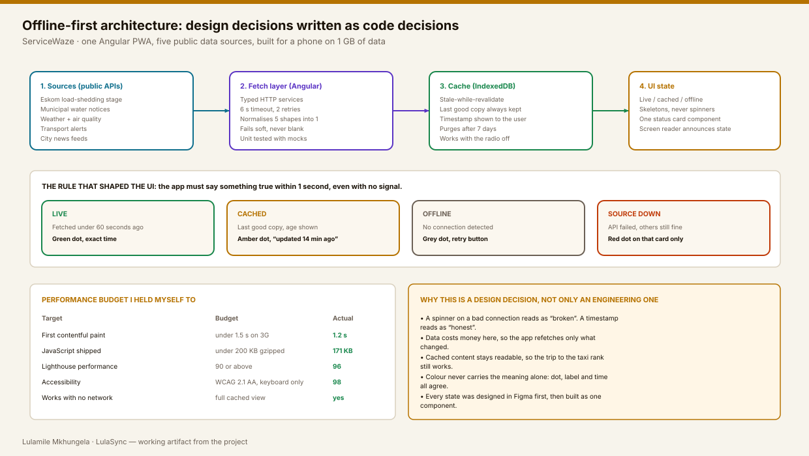

Case study 03 · UX + frontend, one person
SERVICEWAZE:
DESIGNED FOR A BAD SIGNAL.
Is the power out, is the water off, is the road closed? In South Africa those answers live in five different places, usually behind a spinner. I designed and built one Angular PWA that answers them in under a second, even with the radio off.
01
THE PROBLEM IS NOT MISSING DATA.
IT IS SCATTERED DATA.
Load-shedding schedules, municipal water notices, weather warnings, air quality and transport alerts are all published. They just live in five apps, three Twitter accounts and a PDF. On a bad day, at exactly the moment the network is congested, you end up checking all of them.
Design problem
Five sources, five vocabularies, five ideas of “right now”. One screen has to make them comparable and honest about how fresh each one is.
Engineering problem
Public APIs are slow and sometimes down. The app must never show a blank screen because one of them failed.
Local constraint
Mobile data is expensive. Refetching everything on every open is a design decision that costs the user money.
02
WHO I BUILT IT FOR.
Three people I actually know, written up honestly as short profiles rather than invented personas with stock photos.
Nomsa, 34 — runs a salon in Tembisa
Needs to know if power will be on for the 15:00 appointment. Checks between clients, on 1 GB a month. Wants: one glance, no login.
Sipho, 22 — student in Braamfontein
Plans study sessions around the schedule and the water tank. Wants: the next three windows, not a whole calendar.
Karen, 51 — commutes from Centurion
Cares about road closures and air quality for a child with asthma. Wants: an alert she can trust without opening the app.
That sentence became the product rule: never look confident about stale data. Every card shows where its number came from and how old it is.
03
THE INTERESTING WORK
IS IN THE STATES, NOT THE HAPPY PATH.
The default screen took an afternoon. The other five states took three weeks, and they are what makes the app usable in Tembisa at 18:00.
Live
Fetched under a minute ago. Green dot, exact time, no fuss.
Cached
Last good copy with its age in plain words: “updated 14 minutes ago”.
Offline
Cached content stays readable. A retry button, not an error page.
Source down
Only that card degrades. The other four keep working.
Loading
Skeletons shaped like the content, never a spinner in the middle of nowhere.
Empty
“No outages reported for Tembisa” is a result, so it is styled like one.
04
THE REAL COMPONENT, RUNNING HERE.
This is the status card pattern from the app, rebuilt in this page. Switch the connection state and the load-shedding stage to see exactly what a user would see.
Updated just now · 5 sources
Accessibility decisions inside this component
Colour never carries the meaning alone — the dot, the label and the timestamp all say the same thing. The status region is a polite live region, so a screen reader announces a change without interrupting. Every control is reachable and operable from the keyboard.
05
THE SAME DECISION, TWICE:
ONCE IN FIGMA, ONCE IN CODE.
Because I write the component as well as design it, the spec and the implementation cannot drift. Here is the same status card from both sides.
Component: status-card Props title text, sentence case, 1 line, truncates with tooltip value text, 800 weight, never abbreviated below 320px state live | cached | offline | down | loading | empty updatedAt ISO timestamp, rendered as relative time source text, always visible — trust depends on it Rules 1. Meaning is carried by dot + label + time, never by colour alone. 2. Cached and offline keep the last value visible. Nothing is hidden. 3. Skeleton shape must match the final content height (no layout shift). 4. Minimum touch target 44px. Card is one tap target, not three. 5. Contrast at AA against #0D1117 for every state colour.
Why this matters to a hiring team: there is no translation step between the design intent and the shipped component. The prop names in Figma are the prop names in the code, so a review conversation is about the product, not about interpretation.
06
ARCHITECTURE, WRITTEN AS DESIGN DECISIONS.

07
WHERE IT STANDS.
ServiceWaze is in active development and honest about it. The status hub, offline cache and multilingual labels are working; alerts and suburb subscriptions are next.
Shipped
Status hub, five sources, offline cache, English, isiZulu and Afrikaans labels, installable PWA.
In progress
Suburb subscriptions and push alerts, with a quiet-hours rule so the app never wakes you at 03:00.
Backlog
Community-reported outages with verification, because official feeds lag behind the street.
08
WHAT I WOULD DO DIFFERENTLY.
Design the cache before the screens
I drew the perfect-connection screen first and then retrofitted the cached and offline versions. Starting from the worst state would have saved a fortnight of rework.
Set the performance budget on day one
I added the budget in week three and had to remove a chart library to hit it. A budget is a design constraint, so it belongs next to the wireframes.
Test on a cheap phone, not a flagship
Everything felt instant on my device. A borrowed entry-level Android exposed two animations that had to go.
NEED SOMEONE WHO CAN DESIGN IT
AND THEN SHIP IT?
Product design and frontend delivery from the same person, with performance and accessibility treated as design work rather than clean-up.